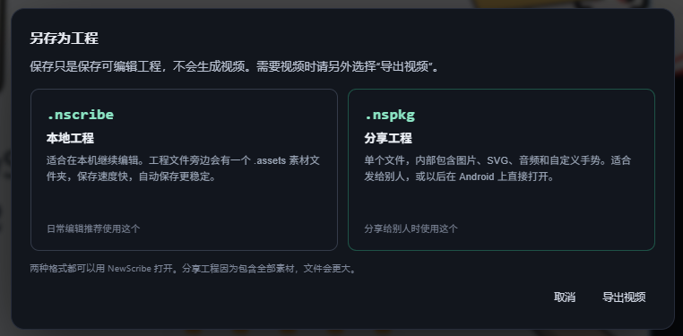

NewScribe user help
Project formats and saving
Local projects, share packages and VideoScribe imports, plus saving, backup and recovery.

.nscribe
Local working project. A project file beside a .assets folder, made for fast editing and autosave.
.nspkg
Single-file sharing project. Images, SVG, audio and custom hands are inside the file.
.scribe
VideoScribe project. Import only; results depend on the original project structure.
3. Project formats#
.nscribe — local project#
.nscribe is the working format. It is a project file next to a folder of the same name ending in .assets:
My project.nscribe
My project.assets/Use it for everyday editing, frequent saving, autosave and fast reopening. It is not the mobile format.
The project file stores scene data, timeline data, masks, fonts and relative asset paths. The .assets folder stores the actual images, SVG and audio files. If you move only the .nscribe file, the assets will be missing.
.nspkg — sharing project#
.nspkg is a single-file package. It contains project data, images, SVG, audio, custom hands and a thumbnail.
Use it when sending a project to someone else, archiving it, moving between computers, or opening it in the mobile app. It is larger and slower to  save because all assets are rewritten together.
save because all assets are rewritten together.
Neither format stores font files. To keep the exact typography, the person opening the project must install the same fonts.
.scribe — VideoScribe import#
.scribe belongs to VideoScribe. NewScribe can import it but cannot save it. Import support is experimental: elements may disappear, stretch, change size or show a different camera. Do not treat NewScribe as a complete VideoScribe replacement for unfinished projects.
Saving, Save As and Export#
Saving creates a project file; it does not create a video.  Export video creates an MP4.
Export video creates an MP4.
The first save asks you to choose .nscribe or .nspkg.  Save As lets you change the format or location.
Save As lets you change the format or location. Ctrl+S saves, Ctrl+Shift+S opens Save As, and Ctrl+E exports.
NewScribe cannot edit an exported MP4 or convert it back into a project.
Backup and recovery#
Each save keeps the previous version as .bak. If the main file is damaged, NewScribe tries to open the backup automatically.
If the project is large, split it into several projects with the same background and combine the exported videos in a video editor. This is often easier than maintaining one enormous timeline.
Keep the project file and its .assets folder together. Do not rename or move only one of them.